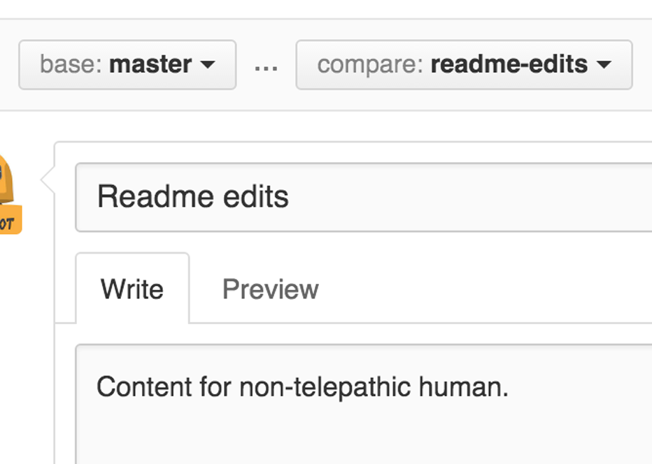

El proyecto Hola Mundo es una tradición consagrada en la programación de computadoras. Es un ejercicio sencillo que le ayuda a empezar a aprender algo nuevo. ¡Empecemos con GitHub!
Aprenderá a:
- Crear y usar un repositorio
- Iniciar y administrar una nueva rama (branch)
- Realice cambios en un archivo y envíelos a GitHub como commits
- Abrir y fusionar una solicitud de inclusión de una rama (merge y pull request)
¿Qué es GitHub?
GitHub es una plataforma de alojamiento de código para el control de versiones y la colaboración. Le permite a usted y a otras personas trabajar juntos en proyectos desde cualquier lugar.
Este tutorial le enseña lo esencial de GitHub como repositorios , ramas (branches) , confirmaciones (commits) y solicitudes de inclusión de ramas (pull request). Creará su propio repositorio Hola Mundo y aprenderá el flujo de trabajo Pull Request de GitHub, una forma popular de crear y revisar código.
No es necesario codificar
Para completar este tutorial, necesita una cuenta de GitHub.com y acceso a Internet. No necesita saber cómo codificar, usar la línea de comandos o instalar Git (el software de control de versiones en el que se basa GitHub).
Sugerencia: Abra esta guía en una ventana (o pestaña) del navegador separada para que pueda verla mientras completa los pasos del tutorial.
Paso 1. Crea un repositorio
Por lo general, se usa un repositorio para organizar un solo proyecto. Los repositorios pueden contener carpetas y archivos, imágenes, videos, hojas de cálculo y conjuntos de datos, todo lo que necesite su proyecto. Recomendamos incluir un archivo README o un archivo con información sobre su proyecto. GitHub facilita agregar uno al mismo tiempo que crea su nuevo repositorio. También ofrece otras opciones comunes como un archivo de licencia.
Su hola-mundo repositorio puede ser un lugar donde almacene
ideas, recursos o incluso comparta y discuta cosas con otros.
Para crear un nuevo repositorio
- En la esquina superior derecha, junto a su avatar o icono de identificación, haga clic en y luego seleccione Nuevo repositorio.
-
Nombra tu repositorio
hola-mundo. - Escribe una breve descripción.
- Seleccione Inicializar este repositorio con un archivo README.

Haz clic en Crear repositorio.
Paso 2. Crea una rama
La ramificación es la forma de trabajar en diferentes versiones de un repositorio a la vez.
De forma predeterminada, su repositorio tiene una rama nombrada
main que se considera la rama definitiva. Usamos ramas para
experimentar y hacer ediciones antes de hacer commits a main.
Cuando crea una rama fuera de la rama main, está haciendo una
copia, o instantánea, de lo que estaba en ese momento main.
Si alguien más hizo cambios en la rama main mientras trabajaba
en su rama, podría incorporar esas actualizaciones.
Este diagrama muestra:
-
La rama
main -
Una nueva rama llamada
feature(porque estamos haciendo 'trabajo de características' en esta rama) -
El recorrido que
featurelleva antes de que se fusione (merge) conmain

¿Alguna vez ha guardado diferentes versiones de un archivo? Algo como:
-
story.txt -
story-joe-edit.txt -
story-joe-edit-reviewed.txt
Las ramas logran objetivos similares en los repositorios de GitHub.
Aquí en GitHub, nuestros desarrolladores, escritores y diseñadores usan
ramas para mantener las correcciones de errores y el trabajo de funciones
separado de nuestra rama main (de producción). Cuando un cambio
está listo, fusionan su rama en main.
Para crear una nueva rama
-
Vaya a su nuevo repositorio
hola-mundo. - Haga clic en el menú desplegable en la parte superior de la lista de archivos que dice branch: main.
-
Escriba un nombre de rama
editar-readme, en el cuadro de texto de nueva rama. - Seleccione el cuadro azul Crear rama o presione "Enter" en su teclado.

Ahora tienes dos ramas main y editar-readme.
Se ven exactamente iguales, ¡pero no por mucho tiempo! A continuación,
agregaremos nuestros cambios a la nueva rama.
Paso 3.Realice y confirme cambios
¡Bravo! Ahora, está en la vista de código de su rama
editar-readme, que es una copia de main.
Hagamos algunas modificaciones.
En GitHub, los cambios guardados se denominan commits . Cada commit tiene un mensaje de confirmación asociado, que es una descripción que explica por qué se realizó un cambio en particular. Los mensajes de confirmación capturan el historial de sus cambios, para que otros colaboradores puedan comprender lo que ha hecho y por qué.
Realizar y confirmar cambios
-
Haga clic en el archivo
README.md. - Haga clic en el icono de lápiz en la esquina superior derecha de la vista de archivo para editar.
- En el editor, escribe un poco sobre ti.
- Escribe un mensaje de confirmación que describa tus cambios.
- Haga clic en el botón Confirmar cambios.

Estos cambios se realizarán solo en el archivo README de su rama
editar-readme, por lo que ahora esta rama contiene contenido
que es diferente de main.
Paso 4. Abra una solicitud de extracción
¡Buenas ediciones! Ahora que tiene cambios en una rama de main,
puede abrir una solicitud de inclusión de la rama pull request.
Las solicitudes de inclusión de ramas (pull requests) son el corazón de la colaboración en GitHub. Cuando abre una solicitud de inclusión de la rama (pull request), está proponiendo sus cambios y solicitando que alguien revise e incluya su contribución y los combine en su rama. Las solicitudes de inclusión de ramas (pull requests) muestran diferencias , o diferencias, del contenido de ambas ramas. Los cambios, sumas y restas se muestran en verde y rojo.
Tan pronto como realice un commit, puede abrir una solicitud de inclusión de la rama (pull request) e iniciar una discusión, incluso antes de que finalice el código.
Al usar el sistema @mention de GitHub en su mensaje de solicitud de inclusión de rama (pull request), puede solicitar comentarios de personas o equipos específicos, ya sea que se encuentren en el pasillo o en 10 zonas horarias de distancia.
Incluso puede abrir solicitudes de inclusión de ramas (pull requests) en su propio repositorio y fusionarlas usted mismo. Es una excelente manera de aprender el flujo de GitHub antes de trabajar en proyectos más grandes.
Abra una solicitud de extracción para cambios en el archivo README
Haga clic en la imagen para una versión más grande
| Paso | Captura de pantalla |
|---|---|
| Haga clic en Pull Request, luego en la página Pull Request, haga clic en el botón verde Nuevo pull request. |

|
En el cuadro Comparaciones de ejemplo, seleccione la
rama que hizo editar-readme, para comparar con
main(el original).
|

|
| Revise sus cambios en las diferencias en la página Comparar, asegúrese de que sean los que desea enviar. |

|
| Cuando esté satisfecho de que estos son los cambios que desea enviar, haga clic en el botón verde grande Crear pull request. |

|
| Dale un título a tu solicitud de extracción y escribe una breve descripción de tus cambios. |  |
{kind=link}
Cuando haya terminado con su mensaje, haga clic en Crear pull request.
Sugerencia: puede usar emoji y arrastrar y soltar imágenes y gifs en comentarios y Pull Requests.
Paso 5. Fusiona tu Pull Request
En este paso final, es hora de unir los cambios: fusionar su rama
editar-readme en la rama main.
-
Haga clic en el botón verde Fusionar pull request para
fusionar los cambios en
main. - Haga clic en Confirmar combinación.
- Continúe y elimine la rama, ya que se han incorporado sus cambios, con el botón Eliminar rama en el cuadro morado.


¡Celebrar!
Al completar este tutorial, ha aprendido a crear un proyecto y realizar un Pull Request en GitHub.
Esto es lo que logró en este tutorial:
- Creó un repositorio de código abierto
- Comenzó y administró una nueva rama
- Cambió un archivo y confirmó esos cambios en GitHub
- Abrió y fusionó un Pull Request
¡Eche un vistazo a su perfil de GitHub y verá sus nuevos cuadrados de contribución!
Para obtener más información sobre el poder de los Pull Request, recomendamos leer la Guía de flujo de GitHub . También puede visitar GitHub Explore y participar en un proyecto de código abierto.
Sugerencia: Consulte nuestras otras guías, el canal de YouTube y la capacitación bajo demanda para obtener más información sobre cómo comenzar con GitHub.
Última actualización 24 de julio de 2020